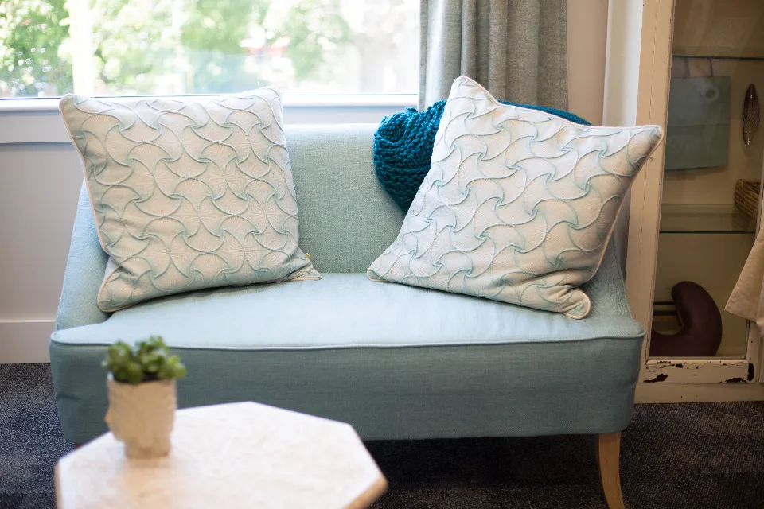
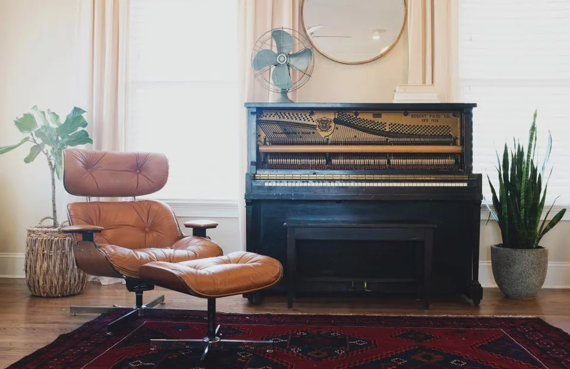
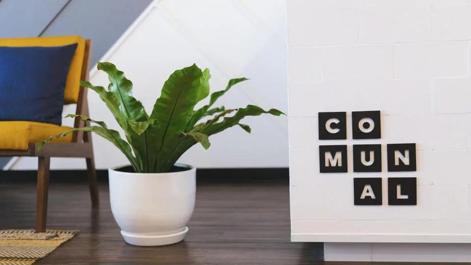

Terapia individual
Ansiedad, estrés, duelos y cambios de etapa.

Psicóloga · M.N. 00000
Terapia para adultos y parejas, presencial en Belgrano y online. Primera entrevista para conocernos.

Sobre mí
Soy psicóloga clínica con 12 años de experiencia. Trabajo desde un enfoque cognitivo-conductual, con herramientas concretas para la ansiedad, el estrés y los vínculos.
Servicios
Ansiedad, estrés, duelos y cambios de etapa.
Comunicación, acuerdos y momentos de crisis.
Desde cualquier lugar, con la misma calidez.
Blog
Blog

Blog
Cómo trabajo
Opiniones
“Me ayudó a ordenar la cabeza en un momento muy difícil.”
Paciente · 34 años★★★★★
“Las sesiones online son igual de cercanas.”
Paciente · 41 años★★★★★
Contacto
Respondemos en menos de 2 horas, de lunes a sábado.
Pedir primera sesión